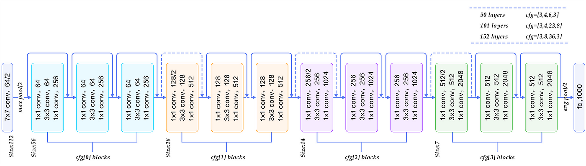

Diagnosis Report
Global Explanation
Overall System Functioning and Role of Automation
Our diabetic retinopathy detection app is engineered to leverage the capabilities of modern smartphones combined with a simple lens attachment, enabling trained users such as nurses and volunteers to conduct preliminary screenings for this eye condition. The core functionality of this system lies in its use of a sophisticated deep learning model, based on the ResNet50 architecture, which analyzes images captured by the smartphone's camera. This automation plays a crucial role by providing a preliminary assessment of the patient’s risk for diabetic retinopathy, thus enabling early intervention. Automation significantly enhances the app's ability to process and interpret complex visual data quickly and accurately, offering a crucial diagnostic support tool in environments where traditional medical equipment is scarce and before it's too late!
Notice of System Use for Individual and Organization Responsible
Our diabetic retinopathy detection app is deployed with a clear notice to all stakeholders, including Data Scientists, IT professionals and
software developers, ethics boards and regulatory authorities... This is crucial for maintaining trust and facilitating effective collaboration among stakeholders, such as:
Data Scientist who develop models and ensures data integrity and model fairness.
Healthcare IT teams who integrate the app within existing health systems.
and Software Engineers who deploy models and build systems.
Ethics boards who carefully check our app to make sure it's fair and transparent.
Regulatory authorities make sure that our app meets all the legal standards for medical devices and protects patient privacy..
By providing such notice, we establish a framework of clear communication, setting expectations for
the continuous support, ethical use, and innovative enhancement of our technology.
Data

datainfo
Model Architecture
modelarc
Model Accuracy

modelacc
Model Confusion Matrix

modelconfusion